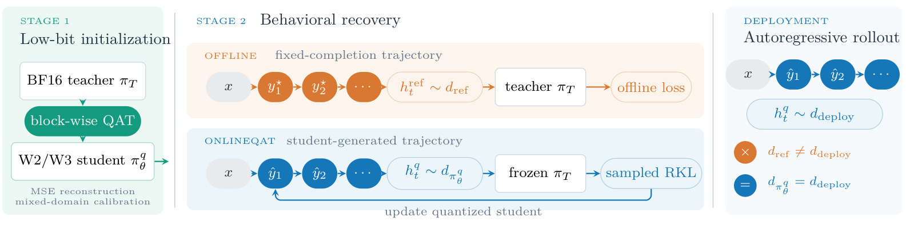
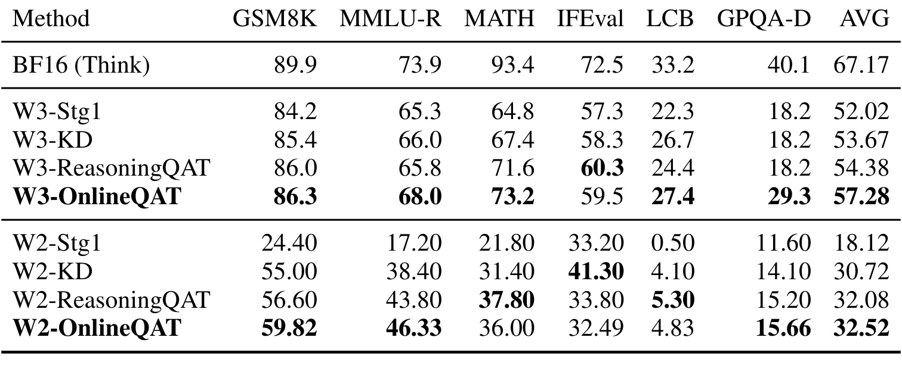

OnlineQAT：在量化学生自己的生成轨迹上恢复超低比特语言模型
OnlineQAT 的英文标题为 OnlineQAT: On-Policy Distillation for Ultra-Low-Bit Large Language Models，中文可译为“面向超低比特大语言模型的在线策略蒸馏”。作者是 Wenjun Wang、Heng Li、Yanggan Gu 与 Hongxia Yang，前三位共同贡献。一作主机构为香港理工大学，合作机构包括中山大学与香港理工大学大亚湾科技创新研究院。论文于 2026 年 10 月 7 日 03:05:42 UTC 首次公开，是四页、标注研究进行中的预印本；本笔记于 2026 年 10 月 8 日核验。唯一论文入口：arXiv 原文。本轮未核验到独立代码或项目页。以下区分原文结果、基于表格的复算和尚待验证的解释。
已有恢复训练常依赖固定答案或教师答案中的前缀，但部署后的量化模型依赖自身已经生成的词元。量化误差一旦改变早期决策，就可能把后续生成带入离线恢复数据未覆盖的状态。
1. 背景和问题
1.1 从权重近似误差到生成状态偏移
超低比特压缩首先面对的是权重存储问题。本文研究只量化权重的设定，将主要线性层的权重压到二比特或三比特，保留浮点激活。这样做的直接动机是减少大语言模型的权重内存和访存负担，但推理质量并不会随存储体积线性变化。少量权重近似误差可以改变当前词元的概率排序，而自回归模型下一步又将这个词元作为上下文。对普通分类模型，输入通常由外部数据固定；对生成模型，输出会反过来成为后续输入。因此，压缩造成的行为差异不仅体现为某个固定上下文上概率分布的偏差，还体现为整条生成轨迹访问了哪些上下文。
推理模型尤其适合暴露这个问题。一条思考过程的早期分支变化，可能导致后续选择另一种计算步骤、代码结构或解题路径。即使量化学生在参考答案的每个前缀上接近教师，部署时也未必走到那些前缀。本文没有测量这种偏移的实际比例，也没有按生成位置展示错误累积曲线，所以“量化引发轨迹偏移”在本研究中首先是问题动机。它得到的直接实验支持是，更换恢复方式之后部分任务的最终分数改善，而非一条已经独立验证的完整因果链。
这里的“状态”就是提示与此前生成词元构成的前缀，不是新引入的隐藏记忆模块。离线训练使用某个固定答案的前缀，学生与教师都在该前缀上预测下一词元；在线策略蒸馏使用学生自己采样出的前缀，再让教师评价同一状态上的词元概率。二者有相同的模型接口，关键差别在于前缀由谁产生。这个区分避免把 OnlineQAT 误读成在线服务中的实时学习系统：本文的在线指训练数据来自当前学生策略，而不是在生产流量中即时更新，也不意味着有用户反馈或外部奖励。
1.2 既有恢复路线已经解决了什么
论文沿用量化感知训练，即在训练中模拟低精度权重，让可训练参数适应量化扰动。相关工作中，BitDistiller 将非对称量化与置信度感知的自蒸馏结合；EfficientQAT 使用块级全参数训练和较轻的端到端量化参数训练；ReasoningQAT 面向推理模型，先做混合域的块级校准，再进行教师引导的恢复。本文将 ReasoningQAT 作为最强的离线比较对象。这些简述来自本文相关工作，并不意味着本笔记已经对每项前作做完整复现实验。OnlineQAT 的新增贡献位于已有低比特初始化之后，保留成熟的第一阶段，再替换第二阶段的监督组织方式。
离线恢复的优点是答案与词元序列固定，训练目标容易复用，不必为每次更新额外生成完整回答。只要参考数据覆盖了部署中学生访问的状态，这种训练就能提供有用信号。问题出现在学生策略与参考轨迹存在差异时：教师虽然在参考前缀上解释了理想下一步，却没有指导学生在自己实际走到的偏离前缀上如何继续。这里不是说参考答案本身不可靠，而是说“参考答案正确”与“训练覆盖了部署状态”是两项不同条件。本文对这项覆盖条件提出修正，而不重新设计校准数据或基础量化器。
在线策略蒸馏也不是本文首次提出的概念。作者提到 GKD 对学生自产生序列上的蒸馏进行了形式化，并引用相关分析和大规模后训练系统作为背景。本文特殊之处是教师与学生共享架构，其能力差距主要由超低比特权重造成，而不是由模型尺寸或架构替换造成。相同架构降低了一部分比较复杂性，却不等于消除了所有因素：学生训练目标、采样温度、训练步数、梯度噪声和数据前缀仍会同时影响最终分数。
1.3 两阶段分工与这篇短论文的证据边界
作者将恢复分为局部初始化与端到端行为恢复，原因很具体：若一开始的二比特学生已经严重退化，它自产生的轨迹未必有学习价值；必须先通过块级输出重建取得能够生成有意义答案的学生，再在这些答案前缀上追求更接近教师的行为。这相当于先修复局部表示，再修复生成分布，而不是让在线蒸馏独自承担从完全失效模型到可用模型的全部责任。后文结果也显示二比特第一阶段均分很低，因而不能忽略初始化及整体恢复对结果的作用。
这项工作与大模型部署方向直接相关，与生成式推荐、推荐解释或内容理解也有潜在联系，但本文没有推荐任务，也没有点击率、排序收益、召回率或线上指标。可以迁移的只是问题意识：当压缩模型的输出影响后续输入时，恢复训练需要检查是否覆盖压缩模型实际访问的上下文。固定输入上的离线排名模型与自回归生成模型不同，不能据此断言所有推荐量化都需要在线策略蒸馏，更不能把数学和代码任务的收益当作推荐收益。
原文只有四页，包含一个方法图、一个主结果表、四个公式以及明确的范围说明，没有附录、消融图或多模型实验。因此本笔记的深度来自解释可核验的目标、训练设定和表内差异，并将复算与推断明确标出。论文最有价值的结论是一个可检验的恢复方向：三比特下，学生前缀上的反向 KL 配方优于所比较的离线配方。它尚未证明前缀覆盖改善本身就是收益来源，也没有证明该配方在更低位宽、更多模型或同算力条件下普遍更好。
还有一个容易混淆的范围问题：本文讨论的教师和学生不是两个独立预训练体系，而是同一模型在不同精度下的对应版本。观察到的能力差距可以与量化联系起来，但第二阶段更新也会改变权重，所以恢复后学生的行为并非简单还原原模型每一项输出。评估应同时检查接近教师的程度与任务终局质量，这两者不能由同一个局部损失数值替代。
2. 方法
2.1 块级低比特初始化
第一阶段输入是混合域校准序列，输出是二比特或三比特的可用学生检查点。教师是冻结的全精度模型，学生保持相同架构，通过伪量化模拟权重离散化。作者沿变换器块顺序逐块优化，既保留全精度流，也保留量化流：前者来自此前全精度块，后者来自此前量化块。因此，当前块不仅学习在相同输入上近似教师，也需要面对前序量化块已经引入的输入偏差。记全精度块为 $B_l$，伪量化块为 $B_l^q$，它们各自的输入为 $H_l$ 和 $H_l^q$；原文公式一为：
符号解释：$T$ 是序列词元数，$C$ 是隐藏宽度，Frobenius 范数将词元与隐藏维度上的输出误差平方求和，再用 $TC$ 归一化。目标比较的是块输出表示，不是最终答案正确性，也不是全词表概率。它有助于控制局部失真，但无法单独规定学生在长序列中的最终行为；这就是需要第二阶段的原因。将两条流向下一块传播，使后面的块在训练时看到与自身低比特前序模块一致的输入，避免只在理想全精度输入上拟合。
权重使用非对称仿射量化，分组大小为一百二十八。第一阶段更新主权重、每组尺度、零点以及 RMSNorm 权重，并通过直通估计器处理离散量化操作的梯度。主权重是训练中承载更新的参数，前向计算模拟离散权重；这里不能把主权重可训练误读为部署仍保留全部浮点线性权重。原文没有给出独立的量化映射公式，本笔记保留四个正式核心公式，不另造量化公式作为论文贡献。对于二、三比特，权重整数范围分别是零到三、零到七。

图一从左至右说明三个阶段。左侧的块级训练把教师转成可生成的低比特学生；中间上方的离线分支使用固定答案轨迹，下方的 OnlineQAT 分支由学生自己生成词元。右侧部署分支也是学生自回归展开，所以方法图用等号表达在线训练前缀与部署前缀的关系，用叉号表达参考前缀与部署前缀的不一致。这个等号描述的是策略生成状态的概念一致性，并不证明任意服务温度、解码规则或线上提示分布都被训练覆盖。教师在下方分支只评价学生已访问状态，学生更新之后未来轨迹会改变；图中的反馈箭头体现这一训练循环。图一没有呈现服务系统、奖励模型或新架构，不应从箭头推断这些额外组件。图中两条恢复分支共享左侧学生初始化，右侧部署也只展示量化学生；这让恢复监督来自哪条轨迹与部署保留哪些模型之间的区别清楚可见。
2.2 学生生成前缀上的反向 KL 恢复
第二阶段先从提示集合采样 $x$，再用当前量化学生在温度 $\tau$ 下生成回答 $\hat y$。第 $t$ 步前缀定义为 $h_t=(x,\hat y_{<t})$；教师与学生都在这个前缀上给出温度缩放后的概率分布，分别记作 $p_{T,t}^{\tau}$ 与 $p_{\theta,t}^{\tau}$。监督对象是学生实际遇到的前缀上的词元行为，而不是把学生答案改成参考答案后再评估。原文公式二写为：
反向 KL 的第一个分布是学生，因此它按学生的概率质量加权比较教师与学生的概率比。与教师分布在前的正向 KL 相比，它把注意力放在学生倾向产生的词元上。词元分布改变与前缀分布改变是两种变化：前者关心同一状态上如何度量差异，后者关心训练访问哪个状态。本文同时切换这两项，因此方法有清楚定义，实验却没有单独验证两项各自的贡献。也不能仅凭反向 KL 的名称，将该学生断言为更有创造性、更少幻觉或具备新的推理能力。
对采样词元 $a_t=\hat y_t$，作者不用整份教师答案作为监督标签，而定义停止梯度的对数概率比，原文公式三为：
停止梯度表示这个对数比在当前更新中充当固定系数，梯度从下一式的学生对数概率流回参数。如果教师比学生更认可该词元，比值对应的对数差为负，最小化损失会提高该词元的学生概率；学生过度偏好而教师较不认可的词元则收到相反方向的信号。这不等同于教师判定答案正确：教师提供相对概率，而没有执行数学验证器或代码测试。教师自身偏差依然可能被继承，训练信号只说明如何向该教师靠近。
原文公式四在一个批次的响应词元上平均这些乘积：
$N$ 是批次响应词元总数，提示词元不计损失。公式二按回答长度归一化，公式四按整批响应词元归一化，两者表达同一局部训练动机，但原文没有进一步讨论不同长度回答的加权影响。反向 KL 策略梯度中的常数加一项被略去，因为其期望为零；有限样本中，训练仍有采样噪声，论文未报告方差、基线或不同温度消融。不要把这个简洁实现解读成对整条自回归轨迹所有依赖项的完整理论证明，本文主要给出所用的一采样更新配方。
实际设定使用温度零点六，没有交叉熵监督项。教师与零点在第二阶段冻结，训练量化学生；相较第一阶段，零点不再随块级重建继续更新。推理时不需要教师参与每个词元的生成，教师只服务恢复训练。由此，方法付出的额外成本主要在训练期的学生展开与教师查询，而不是新增一个必须随部署学生一起运行的教师模型。不过，原文未测量部署延迟或真实压缩后吞吐，不能从训练时教师可移除，直接推出某一硬件上的服务加速倍数。
3. 实验结果
3.1 训练设置与主表口径
实验只覆盖 Qwen3-1.7B 的思考模式，使用三比特权重与十六比特激活、二比特权重与十六比特激活两档。变换器线性层沿输入维度采用分组仿射量化；激活、词嵌入和语言模型输出头保持浮点。因而 W2 或 W3 是主要被量化权重的位宽描述，不能当作全模型每个参数都恰好占相应位数。原文没有实际打包文件大小、量化元数据开销或峰值显存，无法把理论线性层位数直接转换成端到端内存节省百分比。
第一阶段有四千零九十六条、每条二千零四十八词元的序列，来自百分之八十的 OpenThoughts 与百分之二十的 FineWeb。每块训练两个周期，批量为二，优化器是 AdamW；量化参数学习率为 $10^{-4}$，三比特主权重学习率为 $10^{-5}$，二比特为 $2\times10^{-5}$。这些设定把推理域与预训练域结合，并让同一位宽的所有后续恢复方法从同一个检查点起步。这是一项有意义的控制：表内第二阶段差异不是由各自选择完全不同初始化导致，但不同位宽之间不能因此视为相同难度。
第二阶段所有方法使用八张 GPU、有效批量六十四和 AdamW。离线 KD 采用 $0.2\mathcal L_{\mathrm{CE}}+\mathcal L_{\mathrm{JSD}}$；ReasoningQAT 在正确答案前缀上采用 $0.2\mathcal L_{\mathrm{RSFT}}+\mathcal L_{\mathrm{FKL}}$，正向 KL 保留教师前二十个 logits。它在三比特训练五百一十二步、二比特训练一千五百三十六步。OnlineQAT 从三万二千七百五十七个 OpenThoughts 提示生成回答，序列总长最多八千一百九十二词元，遇到结束词元停止。三比特训练四十步，学习率 $5\times10^{-6}$；二比特先三十步从 $2\times10^{-7}$ 预热到 $2\times10^{-6}$，再保持后者训练一百二十步。
六项评测分别是 GSM8K、MATH-500、MMLU-Redux、IFEval、LiveCodeBench 与 GPQA-Diamond，涵盖数学、知识、指令遵循与代码生成。表中的 MATH 指 MATH-500，MMLU-R、LCB 与 GPQA-D 是缩写。所有数值是百分比，AVG 是六项分数的无权平均，不是按样本总量加权的总体准确率。一个任务提高十一个百分点，均分约提高一点八三个百分点，不代表总体测试样本的正确率也增加这么多。任务样本量和难度不同，均分主要是作者用于比较的汇总口径。

表一把浮点基线与两档位宽的初始化、离线 KD、ReasoningQAT、OnlineQAT 一起列出，粗体表示同位宽内最好的量化结果。浮点均分六十七点一七，三比特在线恢复为五十七点二八，二比特为三十二点五二，所以“同档位宽最佳”仍伴随明显的浮点差距。每档位宽都有共同第一阶段基线，可直接观察端到端恢复的贡献；同时，分项粗体提醒读者，均分最优并不意味着每项最优。三比特 IFEval 的最好结果来自 ReasoningQAT，二比特 IFEval 的最好结果来自 KD，二比特数学和代码也由 ReasoningQAT 领先。表格不含误差条、多个种子或显著性标记，不能凭粗体判断小幅差异已经稳定成立。同一任务列可以纵向比较恢复方法，横向比较任务绝对分数却需谨慎，因为它们采用不同试题和判分规则，数值高低不是统一的任务难度尺度。
3.2 三比特：提升较广，但平均数受 GPQA 影响
三比特从第一阶段的五十二点零二到 OnlineQAT 的五十七点二八，增加五点二六个百分点；KD 是五十三点六七，ReasoningQAT 是五十四点三八。按照表中显示精度直接相减，在线方法比 KD 高三点六一；摘要正文写三点六二，可能涉及未展示的原始精度，但论文未说明，所以精读时保留该零点零一的展示舍入差异。相较 ReasoningQAT 的二点九零提升可从表中一致复算，是本文主要报告数字。
逐任务看，相对 ReasoningQAT，GSM8K 从八十六点零到八十六点三，提升零点三；MMLU-R 从六十五点八到六十八点零，提升二点二；MATH 从七十一点六到七十三点二，提升一点六；LCB 从二十四点四到二十七点四，提升三点零；GPQA-D 从十八点二到二十九点三，提升十一点一。IFEval 则从六十点三降到五十九点五，下降零点八。五项上升、仅指令遵循下降，说明改善并非只存在于一个任务，但各项改善的量级很不均匀。
基于表格复算，GPQA 的十一点一贡献了均分提升中的一点八五，即约百分之六十四。去掉 GPQA 后，其余五项差值和为六点三，平均为一点二六。这个敏感性计算不是作者新增实验，只是提醒平均数对任务组成敏感。即便不计 GPQA，其余任务平均仍为正，所以不能将三比特结果简化成“完全靠单项撑起”；同时也不能把二点九视为每个能力方向都相同幅度地提升。尤其 GPQA 没有多种子方差，幅度较大但稳定性还需复核。
距离浮点教师仍有多少差距也很重要。三比特在线学生 GSM8K 比浮点低三点六，MMLU-R 低五点九，数学低二十点二，IFEval 低十三点零，代码低五点八，GPQA 低十点八；均分低九点八九。数学任务的剩余损失尤其明显，显示恢复配方没有完全消除低比特影响。论文没有错误类型、思考长度或步骤正确率分析，无法判断这些剩余差距到底来自早期轨迹分叉、局部表示损伤还是其他解码因素。合理结论是当前配方改善了恢复结果，而非已解释并解决了所有推理退化。
3.3 二比特：恢复幅度大，在线额外收益小
二比特第一阶段只有十八点一二均分，KD 提升到三十点七二，ReasoningQAT 到三十二点零八，OnlineQAT 到三十二点五二。在线方法相对初始化提高十四点四零，反映端到端恢复的重要性；但相对最强离线方法仅增加零点四四，不能把十四点四都归因于在线策略。二者比较问的是不同问题：前者是恢复相对不恢复，后者是在线配方相对现有恢复配方。研究新方法时后者才更接近新增贡献的尺度。
二比特相对 ReasoningQAT 的分项变化为 GSM8K 加三点二二、MMLU-R 加二点五三、GPQA 加零点四六，同时数学减一点八零、IFEval 减一点三一、代码减零点四七。三项上升与三项下降，差值和二点六三，除以六约零点四四，与表内均分一致。这种分布比三比特更明显地体现能力间权衡。尤其三比特代码有三点零增益，二比特代码反而下降；这不支持“在线蒸馏一律改善代码生成”的推广。
二比特 OnlineQAT 的 IFEval 是三十二点四九，低于初始化的三十三点二零，也低于 KD 的四十一点三零。相对 KD，它在知识、数学和部分推理项上有收益，却在指令遵循上付出八点八一个百分点的代价。本文没有提供交叉熵项消融，不能确认不使用监督项是否造成这一损失；也没有恢复数据域配比消融，不能确认提示分布是否过于偏向推理。二比特的弱收益不必否定学生轨迹训练方向，但提示需要按任务选择训练约束，不能只用总平均掩盖指令遵循退化。
相较浮点基线，二比特最终均分仍低三十四点六五，数学低五十七点四，代码低二十八点三七。这样的差距意味着极低位宽的容量或表达损失可能远超当前恢复所能弥补的程度，但“容量限制”仍是解释假设，论文未通过层敏感性或混合位宽实验验证。实践中如果目标任务非常依赖代码或指令遵循，应先查看这些分项，而不因均分最佳就认为二比特方案已经达到可接受服务质量。本文没有定义可用门槛，笔记也不替作者设定。
3.4 能被主表支持与不能被支持的比较
共同初始化让第二阶段比较相对清楚，但目标差异仍然很多。ReasoningQAT 用固定正确答案前缀、正向 KL、教师前二十 logits 与监督项；OnlineQAT 用学生前缀、采样反向 KL、没有监督项，训练日程也不同。缺少“固定前缀加反向 KL”控制，因而无法分离前缀来源与 KL 方向；缺少“学生前缀加正向 KL”等组合，因而无法验证究竟哪个因素必要。这是原文范围说明主动承认的限制，并不是根据结果差异臆造的问题。
训练步数更少也不等于算力更省。在线方法每步需要学生生成最长可到八千余词元的序列，再对访问前缀查询教师，而固定答案训练的成本结构不同。没有每步时长、累计训练词元、教师前向数、生成吞吐或 GPU 小时，四十步与五百一十二步只能描述优化日程，不能用来宣布十二倍效率改善。部署测量同样缺失，因此“压缩改善带宽”是背景动机，“该实现已达到某种服务速度”并不是实验结果。
最后，表格没有独立种子、置信区间、统计检验或第二个模型。二比特零点四四很可能需要重复训练才能判断稳定性，三比特较大的平均收益也需要其他尺度与教师检验。论文没有错误案例或轨迹分布指标，不知道学生是否更少进入不良前缀、教师是否在偏离前缀上更有指导价值。后续研究需要同时报告终局分数与中间机制证据，才能把目前的经验比较推进成解释较完整的方法结论。
4. 总结
OnlineQAT 提供的研究信号很聚焦：对于已经过块级量化初始化的同架构低比特学生，把恢复训练转到学生自己生成的前缀，并采用采样反向 KL，可以在 Qwen3-1.7B 三比特设定下提高六任务均分。它保留已有第一阶段，避免从失效学生直接开始行为学习，随后用冻结教师对学生访问状态提供局部概率指导。四个公式把块输出重建、状态分布目标、停止梯度对数比和实际响应词元损失串接起来，方法不依赖新增结构或人工奖励模型。
三比特的二点九零收益与二比特的零点四四收益必须分别看待；当前比较同时改变前缀分布与 KL 方向，因此尚不能把收益因果地归于在线前缀。本文是一篇初步短论文，结论适合指导下一轮对照实验，尚不足以成为跨模型、跨任务、跨硬件的成熟压缩配方。对于推荐系统研究者，可以从中提炼对生成反馈链的关注，但迁移到用户建模、生成式排序或推荐解释时，应建立自己的压缩误差与后续上下文关系证据。
需要保留的局限至少有四项。其一，唯一模型和思考模式限制外推范围，无法判断无思考模式、其他参数规模或不同架构的结果。其二，缺少多种子使小幅均分改善缺乏稳定性信息，尤其二比特正负任务差异相互抵消。其三，前缀、KL 方向、监督项与训练日程同时变化，主表不具备因素归因能力。其四，缺少训练总成本和真实部署测量，不能把更短步数理解为更低算力或把权重位宽理解为实际端到端加速。教师质量、离线提示域覆盖、生成长度权重也没有独立分析，这些限制都应随方法一起记录。
优先跟进可以按证据缺口安排三项工作。先在相同初始化、相同词元预算与相同提示集合下加入离线反向 KL，对照当前在线反向 KL；再补学生前缀正向 KL 与监督项开关，拆开前缀分布和目标函数的作用。随后对两档位宽各重复多个训练种子，分任务报告方差与差值，重点复核 GPQA 大幅上升及二比特 IFEval 退化。最后记录学生展开、教师查询、反向更新的累计 GPU 时间和评测解码条件，在更多模型上比较恢复质量与成本。
若将方向引入生成式推荐，一个具体、尚未被本文验证的实验是让量化模型生成多步候选解释或用户意图表达，再比较固定参考前缀与量化学生前缀上的恢复。评价同时观察最终推荐质量、解释约束和生成轨迹，而不只观察某个固定前缀的词元损失。这样的迁移可以检验本文的问题意识是否成立，但应与本文已报告的六任务结果分开。现阶段最应关注的是三比特在线恢复的可重复性、二比特的分项权衡以及成本匹配控制，而不是把“在线”当作通用性能保证。